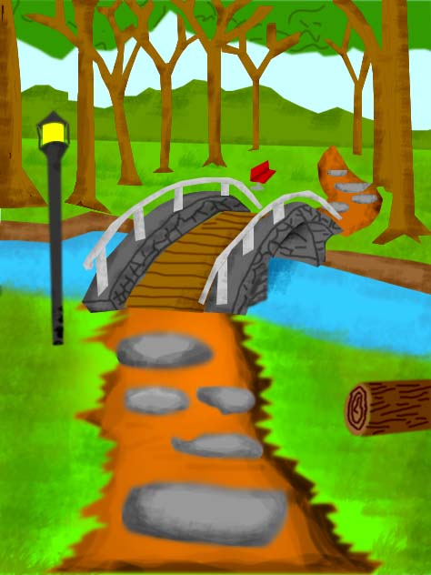
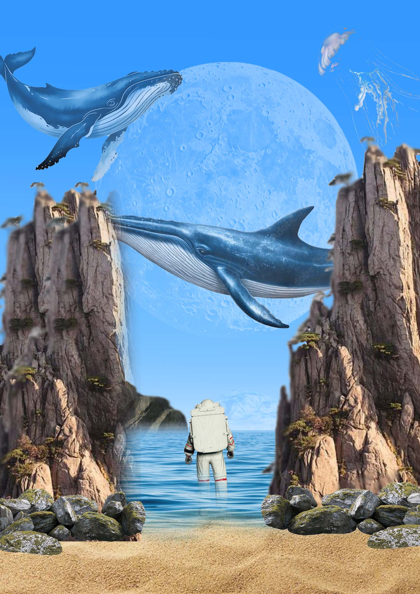
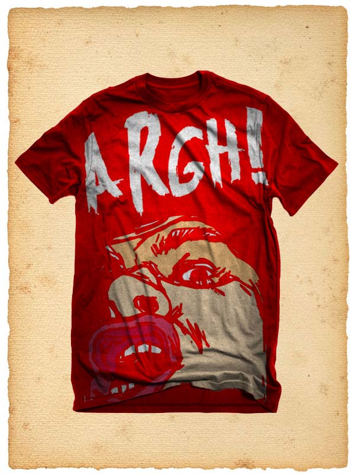

Biodata Diri
Nama Lengkap
: RENDRA PARTOMUAN PASARIBU
Tanggal Lahir
: 17 Mei 2010
Jenis Kelamin
: Laki-laki
Pendidikan
: D4 / TEKNIK INFORMATIKA
Alamat
: CIBINONG KAB. BOGOR
Minat
: Pemrograman, Desain UI/UX, Fotografi
Tentang Saya
Saya adalah lulusan Teknik Informatika yang memiliki minat besar dalam pengembangan
Keahlian
Saya adalah seorang profesional yang berfokus pada
HTML & CSS
JavaScript
Tailwind CSS
PHP
Figma
Desain Grafis
Manajemen Proyek
Proyek & Karya


Menggambar
Membangun toko online lengkap dengan sistem pembayaran dan manajemen produk.
Lihat Detail →
Dimensi
Aplikasi pencatatan keuangan pribadi dengan fitur grafik dan laporan bulanan.
Lihat Detail →